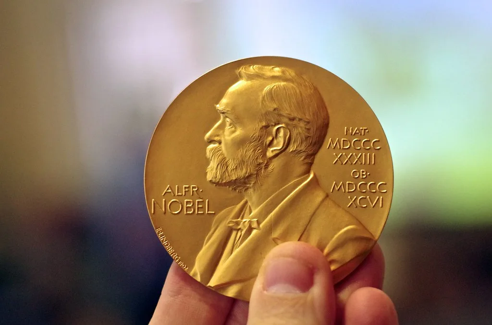

노벨평화상에 나비 필라이…"만델라 변호한 인권법 상징"
노르웨이 노벨위원회는 9일(현지시간) 남아프리카공화국 출신 법률가 나비 필라이를 2026년 노벨평화상 수상자로 발표했다. 필라이는 국제사법재판소(ICJ) 특별재판관을 맡고 있으며, 노벨위원회는 "평화와 국제법 증진에 기여한 공로"를 선정 이유로 밝혔다. 위원회는 "보편적인 법적 원칙에 대한 헌신과 확고한 도덕적 신념이 오랜 경력 내내 변함없이 이어져 왔다"고 평가했다. 시상식은 노벨 사망일인 12월 10일 노르웨이 오슬로에서 열릴 예정이며, 수상자에게는 메달과 상장, 상금 1100만 스웨덴 크로나가 수여된다.
1941년 남아공 더반의 인도계 타밀족 가정에서 태어난 필라이는 1967년 인도계 여성으로는 처음으로 남아공 나탈주에서 법률사무소를 열고 변호사 활동을 시작했다. 아파르트헤이트(인종분리정책) 체제 아래에서 그는 정치범들의 인권 보호에 힘을 쏟았는데, 이 시기 그가 변호한 인물 중에는 훗날 남아공 대통령이 된 넬슨 만델라도 포함돼 있었다. 당시 비백인 여성 변호사로서 법정에 서는 것 자체가 쉽지 않았던 시절, 그는 인종차별에 맞서는 법률 투쟁의 최전선에 섰다.

필라이의 경력은 남아공 국내를 넘어 국제 무대로 이어졌다. 1995년에는 남아공 고등법원 최초의 비백인 여성 판사로 발탁됐고, 같은 해부터 2003년까지는 르완다 국제형사재판소(ICTR) 재판관으로 일하며 이 중 4년간은 재판소장을 맡아 집단학살 범죄를 심판하는 역할을 수행했다. 이후 2003년부터 2008년까지는 국제형사재판소(ICC) 재판관을 지냈고, 2008년부터 2014년까지는 유엔 인권최고대표(OHCHR)를 역임하며 세계 각지의 인권침해와 전쟁범죄 책임을 강하게 촉구하는 목소리를 냈다.
이번 수상으로 노벨평화상은 2년 연속 여성 수상자를 배출하게 됐다. 노벨위원회는 특정 분쟁이나 정치적 사건이 아니라 한 개인의 수십 년에 걸친 법률가로서의 일관된 행보에 상을 수여함으로써, 국제법과 사법 정의가 평화 구축의 토대라는 메시지를 강조한 것으로 풀이된다. 전쟁범죄 심판과 인권 보호에 평생을 바친 필라이의 경력은 법의 지배가 분쟁 예방과 화해의 출발점이 될 수 있다는 점을 보여준다는 평가가 나온다.
국제 인권 단체들과 법조계에서는 이번 수상을 반기는 분위기가 뚜렷하다. 르완다와 구 유고슬라비아 등 분쟁 지역의 전쟁범죄를 국제형사재판소 체제 안에서 심판해 온 선례를 쌓은 인물이 평화상을 받은 것은, 사법적 책임 규명이 단순한 처벌을 넘어 평화 정착에 기여한다는 공감대를 넓히는 계기가 될 것이라는 전망이다. 85세에 이른 나이에도 현직 국제사법재판소 특별재판관으로 활동 중인 그의 수상은 평생에 걸친 헌신에 대한 뒤늦은 조명이라는 평가도 나온다.
필라이의 수상은 최근 몇 년간 분쟁과 전쟁이 끊이지 않았던 국제 정세 속에서도 노벨위원회가 거대한 정치적 타결이 아닌 사법 정의의 축적된 역할에 주목했다는 점에서도 의미를 갖는다. 전쟁범죄와 인종차별에 대한 책임을 법정에서 끝까지 물어온 그의 행보는, 평화가 선언만으로 이뤄지는 것이 아니라 제도와 법 집행을 통해 다져진다는 사실을 보여준다는 평가로 이어진다. 세계 각국의 법조계와 인권 단체들은 이번 수상을 계기로 국제형사재판소와 국제사법재판소의 역할에 다시 관심이 모일 것으로 내다보고 있다.